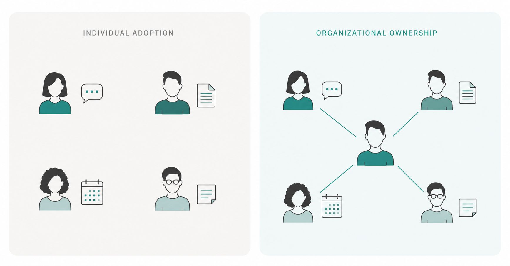

The organizations I've worked with that are making real progress with AI have one thing in common: one person who owns it.
Not a dedicated role, but at least one person who's genuinely curious, follows what's happening, and translates it for the rest of the team. They didn't get a mandate. They were given permission to explore.

Without that person, AI stays personal. One staff member using ChatGPT for meeting notes, another drafting emails with Claude. Useful, but disconnected. The organization never learns; only the individual does.
A 2026 benchmark study found 92% of nonprofits using AI in some form, but only 7% say it's expanded what their organization can do. The gap isn't access to tools, it's whether anyone is connecting the dots.
For a small, stretched team, that's a hard ask. Which is exactly why it has to come from the top. Not training sessions or a policy document, though both help. A clear expectation: staying current with AI is part of everyone's job now, and the people already interested have permission to go further.
In most teams, that person already exists. They're waiting to be encouraged rather than tolerated. When they're not there, it becomes a hiring question. Not a specialist. Just a real criterion alongside whatever else you're hiring for.
There's no shortage of advisors, paid and volunteer, who can help a small nonprofit think this through. That outside perspective is worth having. But a consultant can map the opportunity and then leave. Someone inside still has to care about it next month.
The efficiency gains are real. Getting beyond them requires a person, not a platform.
Who owns AI in your organization right now?